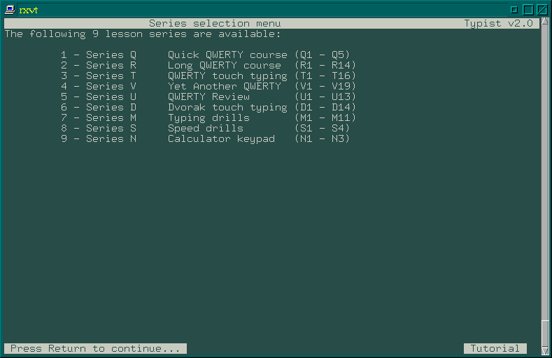
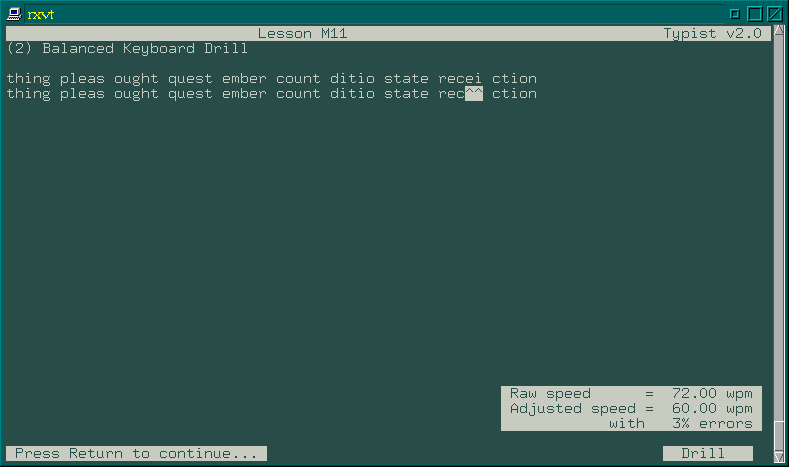

![[ TABLE OF CONTENTS ]](../gx/indexnew.gif)
![[ FRONT PAGE ]](../gx/homenew.gif)


Recently a small, ncurses-based typing tutor program appeared on the Sunsite archive site. Typist is a revision of an old, unmaintained Unix program. Simon Baldwin is responsible for this updated version, and he has this to say about the origin of his involvement:
This program came from a desire to learn 'proper' typing, and not the awkward keyboard prodding I've been doing for the past 10 years or more. Since I usually run Linux rather than Windows or DOS, I looked around for a tutor program, and surprisingly, found nothing in the usual places. Eventually, I stumbled across Typist - a little gem of a program for UNIX-like systems. The original worked great, but after a while I started noticing odd things - some lessons seemed to go missing, and the programs were apt to exhibit some strange behaviours. After fixing a few bugs it seemed that the time was right for something of a rewrite.
Don't expect a Linux version of Mavis Beacon; Typist has a simple but
efficient interface without extraneous graphical fluff. Start it up and here is
what you will see:

Once a choice of lessons has been made, a series of help screens explain
the usage of the program. Here is a lesson screenshot:

The general idea is to type the exact letters or words shown on the screen; if a mistake is made a caret is shown rather than the letter typed. If no mistakes were made, the next section of the lesson appears; otherwise the first section is repeated until there are no errors. After each run through a lesson, a box appears showing typing speed and number of errors.
A Dvorak lesson is even included for those willing to swim against the tide in the pursuit of greater typing speed. I've considered learning the Dvorak system, but have refrained due to my family's occasional need to use my machine. I don't want to make the transition between Windows and Linux systems more of a culture shock than it already is!
Typist's small size and spartan interface does have the advantages of quick start-up and low overhead, making it ideal for quick usage in the intervals between other tasks, or while waiting for a web-site to load.
Typist also exemplifies one my favorite scenarios in the free software world: an old source code archive languishing on an FTP site somewhere is now revived and given new life and new users.
At the moment, the only source of the program seems to be the /pub/Linux/Incoming directory at the Sunsite archive site. Presumably Typist will eventually be filed away elsewhere on the site, but I don't know just where it will end up. Incidentally, Typist has now been re-released under the GNU GPL.